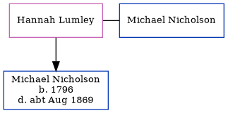

Hannah Nicholson (née Lumley)
[ Home ] | [ Calendar ] | [ Surnames Index ] | [ Family History ]Hannah Lumley and married Michael Nicholson (with whom she had 1 child, Michael) in Ryton, Tyne and Wear, England on Jan 1, 17911.
Children
- Michael was born in 1796
Citations
- Northumberland And Durham Marriages - Findmypast
Media
Northumberland and Durham Marriages - GBPRS/M/356098025/3
Family Tree

Map
Generated by ged2site. Last updated on Feb 28, 2025